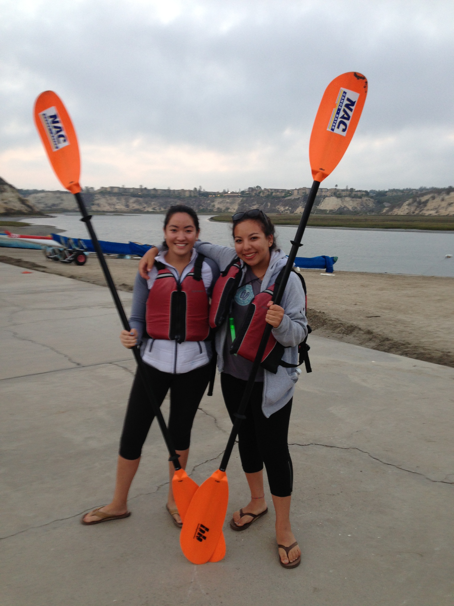
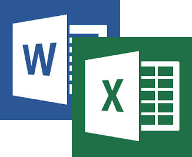

-

My Favorite Image
This is a picture of me and my best friend, Victoria. I met her at LBJC, which was my high school rowing club and we have been best friends ever since. This was taken last summer when we went moonlight kayaking together in Newport.
-

My Class Schedule
For the spring quarter of my second year, I am taking four classes. I am taking Cogs 3, HILD 2C, Econ 110B, and Econ 110A. Here is where you can find the class schedule that I made for one of this class's HTML assignments.
-
How to Use Filezilla (FTP)
To use Filezilla, you have to know the class server, which is icogsci1.ucsd.edu. Your username is "cg3s" + your two letters that were assigned to you. The password is the same as your school email password, and the port is 22. After that, you can view all your files on your local site, like your laptop, and transfer them to the remote site, which is your account on the class server.
-

My Favorite Recipe
My favorite thing to bake is banana bread with caramel sauce. It is really easy to make and tastes delicious. I made a webpage for the recipe, which can be found here.
-

Word & Excel
I'm glad that I got to do the Word and Excel assignments for this class, because I think learning those skills could be useful for the future. These assignments made me aware of the tools that were available in these programs. I now have gained skills that makes working in these programs much more efficient.
-
Favorite Assignment
My favorite assignment was the html table, because that was the first assignment that made me really enjoy the class. I had fun with the css sheet because I was able to focus on the appearance of the assignment, rather than just creating it, but creating it was fun too.
-
Least Favorite Assignment
My least favorite assignment was using LearnStreet to learn javascript. Learning javascript was fun, but the website caused lots of technical difficulties. Also, I thought some of the assignemnts were hard and I felt that the program didn’t prepared me enough beforehand for some of the assignemnts.
-
Next Step in Computers
I enjoyed this class so much that I plan on changing my major to cognitive science and specializing in human-computer interaction. I liked that the programming was challenging but rewarding at the same time, and I had a lot of fun designing everything.